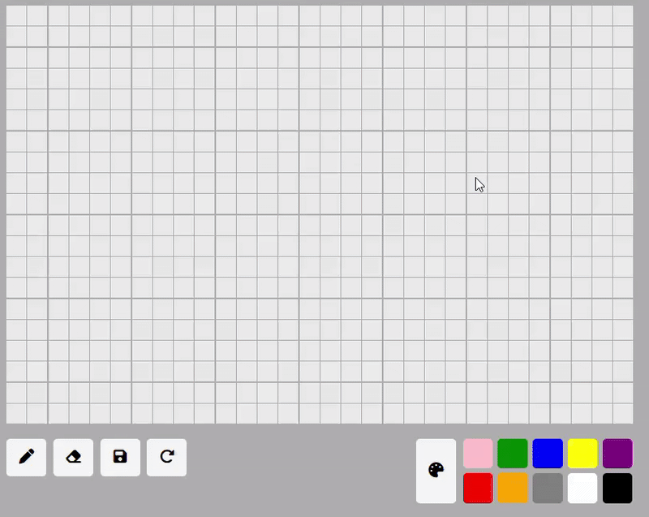
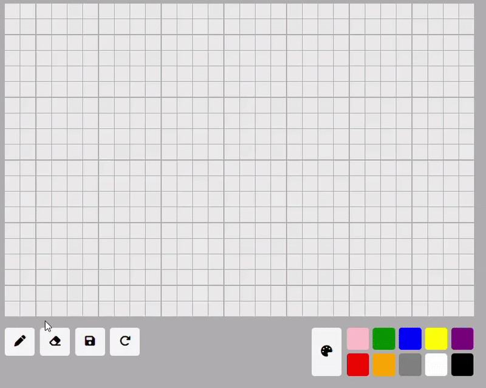

Code

saveBtn.addEventListener("click", () => {
const canvas = document.createElement("canvas");
const ctx = canvas.getContext("2d");
const cellSize = 20;
canvas.width = columns * cellSize;
canvas.height = rows * cellSize;
const gridItems = document.querySelectorAll(".grid-item");
gridItems.forEach((cell, i) => {
const col = i % columns;
const row = Math.floor(i / columns);
const color = window.getComputedStyle(cell).backgroundColor;
ctx.fillStyle = color;
ctx.fillRect(col * cellSize, row * cellSize, cellSize, cellSize);
});
const link = document.createElement("a");
link.download = "dot-by-dot.png";
link.href = canvas.toDataURL("image/png");
link.click();
});

const rows = 20;
const columns = 30;
for (let i = 0; i < rows * columns; i++) {
const gridItem = document.createElement('div');
gridItem.className = 'grid-item';
gridItem.addEventListener("click", function () {
paint(gridItem);
});
gridItem.addEventListener("mouseover", function () {
if (isMouseDown) {
paint(gridItem);
}
});
gridContainer.appendChild(gridItem);
};

function paint(gridItem) {
if (currentTool === "pen") {
gridItem.style.backgroundColor = selectedColor;
} else if (currentTool === "eraser") {
gridItem.style.backgroundColor = "rgb(234, 234, 234)";
}
};
penBtn.addEventListener("click", () => {
currentTool = "pen";
penBtn.classList.add("selected");
eraserBtn.classList.remove("selected");
});
eraserBtn.addEventListener("click", () => {
currentTool = "eraser";
eraserBtn.classList.add("selected");
penBtn.classList.remove("selected");
});
colorBtn.addEventListener("click", () => {
colorPicker.click();
});
colorPicker.addEventListener("input", (e)=>{
selectedColor = e.target.value
});